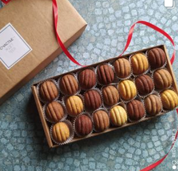
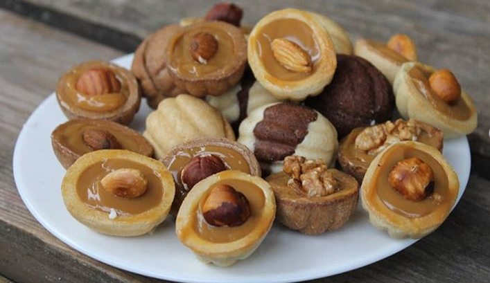
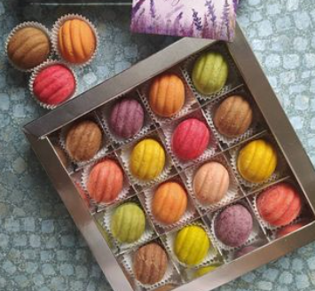

ВСЁ, КАК ВЫ ЛЮБИТЕ...

Идеальный десерт к ароматной чашечке кофе или любимому чаю. Находка для похода в гости.
Всегда в наличии и под заказ. Для максимальной свежести готовим в день доставки предварительного заказа.
Уютно упакуем и доставим бесплатно.
Все просто))) только натуральные ингредиенты:

Масло 82,5%
Сметана 26%
Яйца
Сахар
Мука высшего сорта
Ванилин
Начинка:сваренное сгущенное молоко (8,5%).
По желанию, её можно дополнить вкусом любых орешков: грецкий орех, арахис, фундук, миндаль, кокос.
Орешки могут быть светлыми и темными разной степени насыщенности, это зависит от количества добавления какао (72,5%).

Готовы удивить Вас цветными орешками.
Груша
Банан
Красная+черная смородина
Малина
Персик
Фисташка
Рафаэлло
Кофе
Вишня
Черника
Апельсин
Мята
Клубника
Ядра грецкого ореха, фундука или арахиса можно добавить целыми или дробить.
ВСЁ, КАК ВЫ ЛЮБИТЕ...